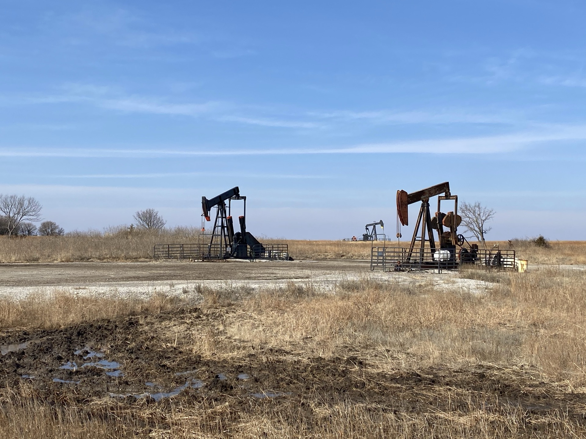
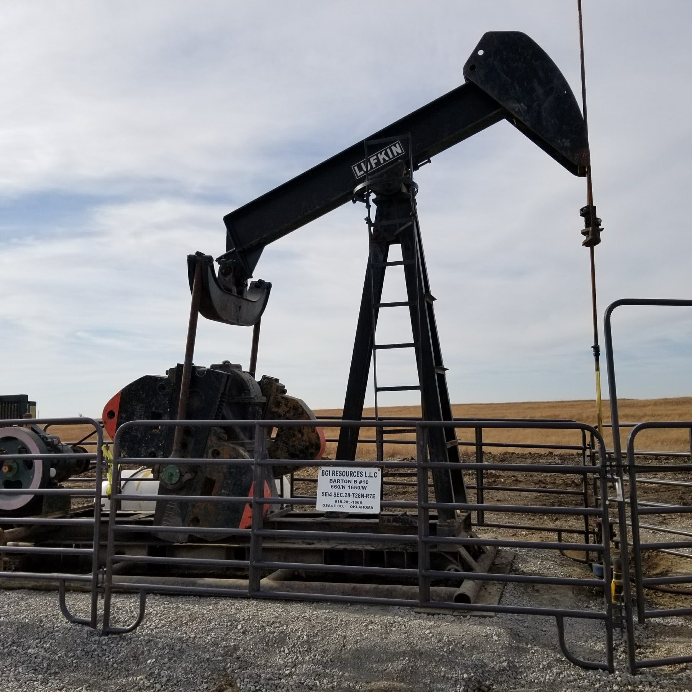
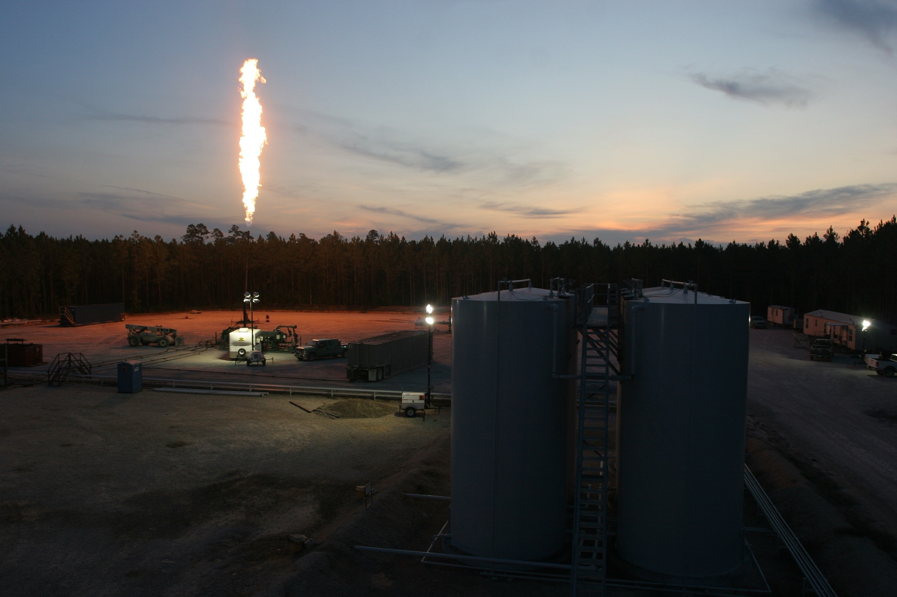

Berkeley Geoimaging, LLC
We Drill Oil Wells
and Manage Them Efficiently
Oil and gas operations in Oklahoma and Illinois.
Our Approach
We explore, drill, and operate oil and gas assets. Prospect identification starts with 3D seismic interpretation and local geology expertise. That work was done in-house for years and today runs through a network of experienced consultants who know these basins well.
Where we operate, we control costs, optimize production, and make the calls. Where we hold a working interest without operational control, we rely on 20-plus years of relationships and reservoir knowledge to protect that position. The same approach applies either way.
Our Projects

Operated • OklahomaBGI Resources
35-well portfolio with exclusive drilling concessions spanning over 100 square miles of Osage County, Oklahoma. 100% working interest, full operational control.
Learn More
Non-Operated • IllinoisForbes Lake
A 21% working interest in an oil field beneath Forbes Lake State Park, Illinois. Over 4.5 million cumulative barrels produced across 14 wells over 25 years.
Learn More